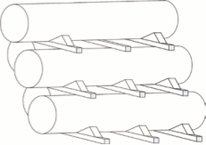
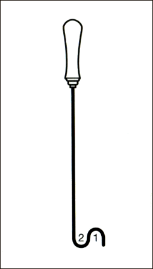

Holzkeile sollen das Auseinanderrollen, Rutschen und Abgleiten verhindern (Bild 4-1). Der Faserverlauf soll zur Spitze weisen, damit die Keile nicht brechen und erforderlichenfalls auch genagelt werden können.
Unterleghölzer geben Bodenfreiheit beim Absetzen und ermöglichen beim Stapeln, das Anschlagmittel zwischen den abgesetzten Lasten herauszunehmen (Bild 4-1).

Bild 4-1: Keile und Unterleghölzer verhindern das Wegrollen
Wenn die Last wieder transportiert werden soll, erleichtern sie das Zwischenschieben bzw. Ziehen des Anschlagmittels.
Das Herausziehen des Anschlagmittels unter der aufliegenden Last
Deshalb müssen die Hölzer ausreichend dick sein, um Platz für das vorgesehene Anschlagmittel zu schaffen und genügend stabil, um die auftretende Belastung aufnehmen zu können. Abbrechende Unterleghölzer fliegen wie Geschosse und verursachen immer wieder schwere Unfälle.
Beim Stapeln schwerer Teile, wie Träger und Brammen, keine Hölzer unter 8x8cm verwenden!
Um Fingerquetschungen zu vermeiden: Seitlich anfassen.
Ziehhaken aus hakenförmig gebogenem Draht mit Handgriff ermöglichen es dem Anschläger, seine Hände aus dem Gefahrenbereich herauszuhalten (Bild 4-2). Der Anschläger ist in der Lage, mit dem Ziehhaken das Anschlagmittel in Position zu halten oder die Lage zu korrigieren: Beispielsweise in der Stellung 1 drücken, in der Stellung 2 ziehen.

Bild 4-2: Ziehhaken